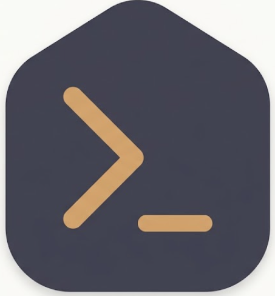

UI/UX Designer Assistant
Membantu mendesain antarmuka modern berdasarkan prinsip hirarki visual dan WCAG.
Kategori: Design | Platform: Claude / OpenAI
❤️ 124 Favorites | 👁️ 2.4K Views
Lihat Detail Skill
Platform Komunitas Terpusat untuk Menemukan dan Membagikan AI Skills
Dapatkan instruksi, system prompt, dan otomatisasi dari Claude, OpenAI, Gemini, hingga AI Agents dalam satu tempat.
Cari Skill Sekarang | Bagikan Skill AndaMembantu mendesain antarmuka modern berdasarkan prinsip hirarki visual dan WCAG.
Kategori: Design | Platform: Claude / OpenAI
❤️ 124 Favorites | 👁️ 2.4K Views
Lihat Detail SkillMenganalisis potensi celah keamanan pada repositori Python menggunakan standar OWASP.
Kategori: Security | Platform: General AI
❤️ 98 Favorites | 👁️ 1.8K Views
Lihat Detail Skill| Ekosistem AI | Jumlah Skill | Kontributor Aktif |
|---|---|---|
| Claude / Anthropic | 145 | 42 |
| OpenAI / ChatGPT | 310 | 98 |
| Gemini | 88 | 25 |
| AI Agents / Cursor | 120 | 34 |